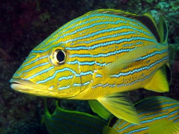
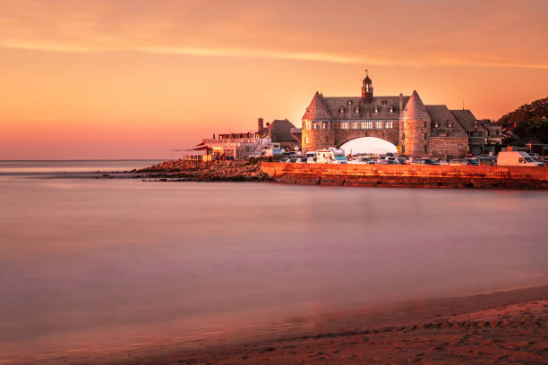

My Favorite Things:
I have mentioned a few of my favorite places and things but have added a list here for quick reference. Below you will find links to things I enjoy. Reach out and share your thoughts on them! It would be great to hear some suggestions of new things that you think I would like too! I always appreciate finding new “stuff” that interests me.
-
Favorite Family Activity

Biomes Marine Biology Center -
Favorite Restaurant
Los Andes Restaurant -
Favorite Band
Tool
-
Favorite Area in RI

Town of Narragansett